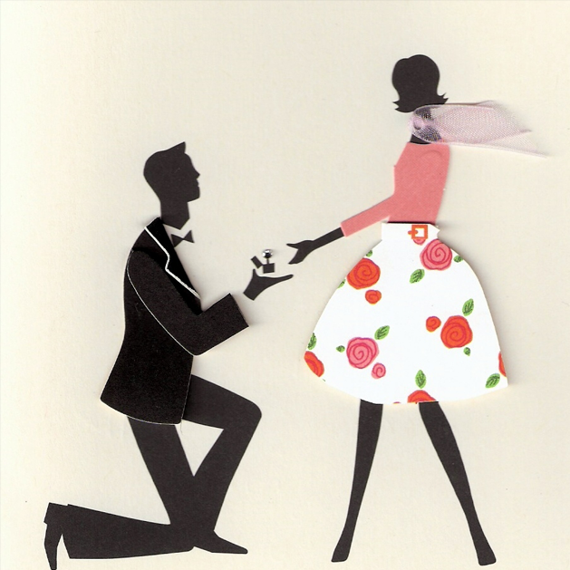

Belajar phrygian Scale
Nov 10, 2017 Views: 2,230,493Phrygian Scale adalah scale yang sering dimainkan oleh musisi-musisi Rock seperti Dream Theater, Black Sabbath, Metalica dan lainnya. Mengetahui variasi scale tentunya dapat memperindah permainan gitar dalam genre Rock tentunya.
Watch This
Mengenal Tremolo yang baik untuk Gitar
Nov 10, 2017 Views: 1,794,987Terkadan pada saat Jaming atau sekedar Figgering, kita sering mengalami Fals yang bisa mengurangi kualitas performace, sebelum performance melakukan pemanasan (finggering).
Watch This

List Lagu Untuk Nembak Cewek Pake Gitar
Nov 10, 2017 Views: 133,932,769Mempunyai kemampuan lebih memang menjadi salah satu Daya memikat lawan jenis (jodoh) ditambah usaha dan keyakinan yang hakiki. Berikut adalah list lagu yang cocok buat si dia..